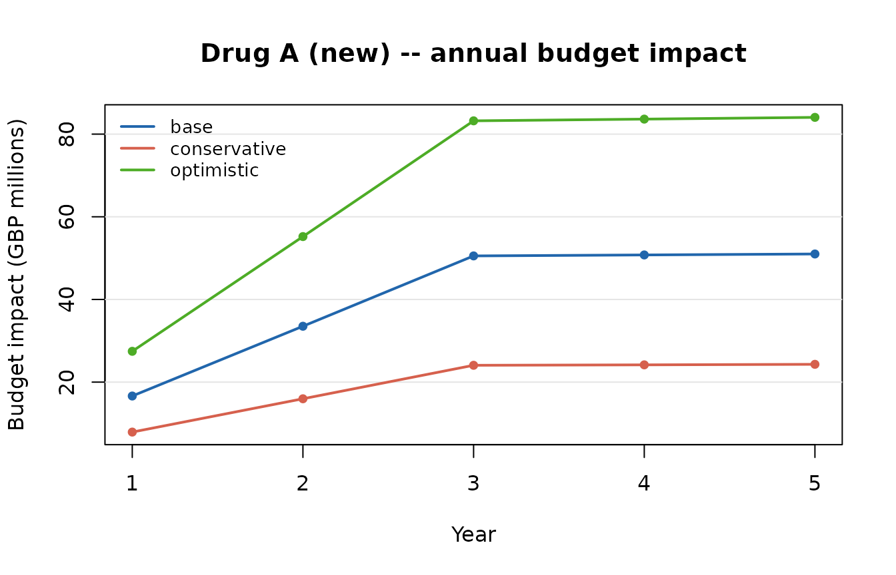
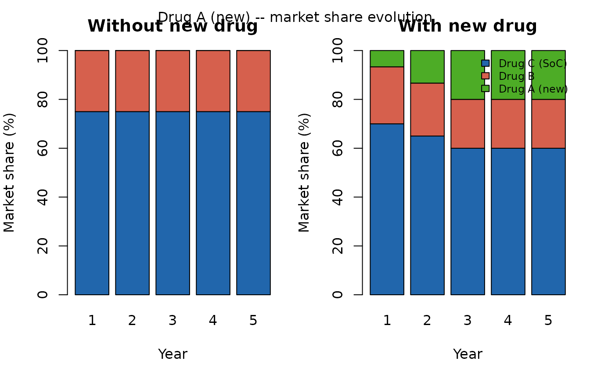
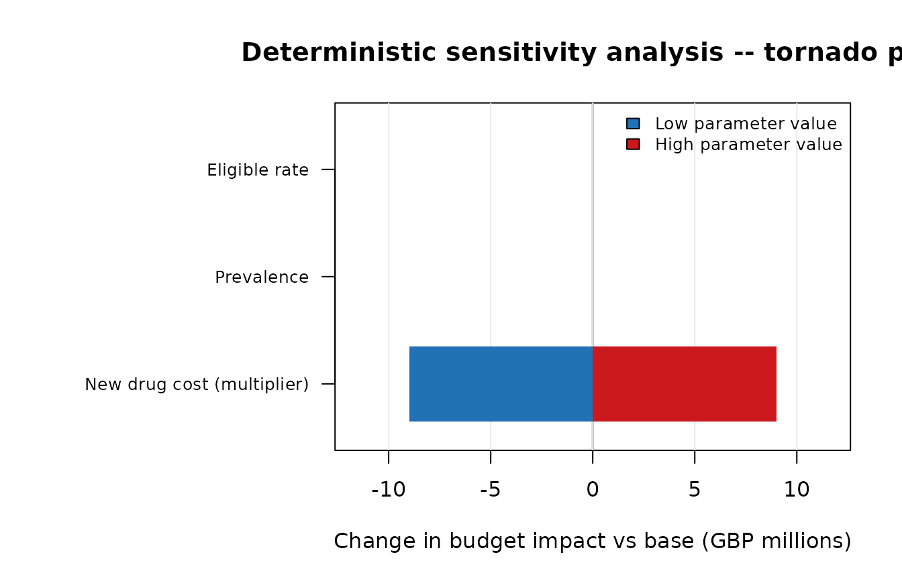
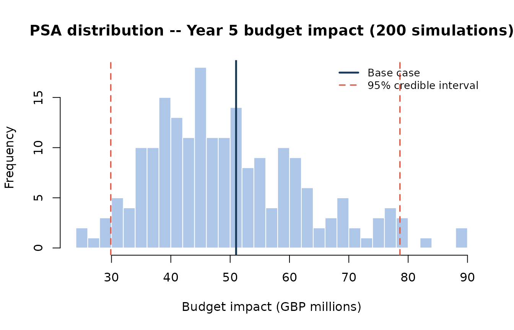

Introduction to htaBIM
Shubhram Pandey: Heorlytics Ltd
2026-03-19
Source:vignettes/htaBIM-introduction.Rmd
htaBIM-introduction.RmdOverview
htaBIM provides a structured, reproducible framework for
budget impact modelling (BIM) in health technology
assessment (HTA), following the ISPOR Task Force guidelines (Sullivan et
al., 2014; Mauskopf et al., 2007).
A budget impact model answers: “If this new treatment is reimbursed, what is the financial impact on the payer’s budget over the next 1–5 years?”
Workflow
bim_population() -> bim_market_share() -> bim_costs() -> bim_model() -> outputsStep 1: Eligible population
The epidemiology funnel estimates the number of patients eligible for treatment each year from a reference population size and cascade rates.
pop <- bim_population(
indication = "Disease X",
country = "custom",
years = 1:5,
prevalence = 0.003,
n_total_pop = 42e6,
diagnosed_rate = 0.60,
treated_rate = 0.45,
eligible_rate = 0.30,
growth_rate = 0.005,
data_source = "Illustrative values only"
)
summary(pop)
#>
#> == Population Summary ==
#> Indication : Disease X
#> Country : custom
#> Approach : prevalent
#>
#> Epidemiological funnel (Year 1):
#> Total pop : 4.2e+07
#> Prevalent/incident : 126,000
#> Diagnosed : 75,600
#> Treated : 34,020
#> Eligible : 10,206
#>
#> Data source : Illustrative values onlyStep 2: Market shares
Define the mix of treatments in the current world (without new drug) and the new world (with new drug), plus any scenario variants.
ms <- bim_market_share(
population = pop,
treatments = c("Drug C (SoC)", "Drug B", "Drug A (new)"),
new_drug = "Drug A (new)",
shares_current = c("Drug C (SoC)" = 0.75, "Drug B" = 0.25, "Drug A (new)" = 0.00),
shares_new = c("Drug C (SoC)" = 0.60, "Drug B" = 0.20, "Drug A (new)" = 0.20),
dynamics = "linear",
uptake_params = list(ramp_years = 3),
scenarios = list(
conservative = c("Drug C (SoC)" = 0.68, "Drug B" = 0.22, "Drug A (new)" = 0.10),
optimistic = c("Drug C (SoC)" = 0.50, "Drug B" = 0.18, "Drug A (new)" = 0.32)
)
)
print(ms)
#>
#> -- htaBIM Market Share --
#>
#> Treatments : Drug C (SoC), Drug B, Drug A (new)
#> New drug : Drug A (new)
#> Dynamics : linear
#> Scenarios : current, base, conservative, optimistic
#>
#> Year 1 shares (base, with new drug):
#> Drug C (SoC) : 70.0%
#> Drug B : 23.3%
#> Drug A (new) : 6.7%Step 3: Costs
Per-patient annual costs are built by treatment and cost category (drug, admin, monitoring, adverse events, other). Adverse event costs can be computed from an event-rate table.
ae_tab <- data.frame(
ae_name = c("Injection site reaction", "Fatigue"),
rate = c(0.07, 0.12),
unit_cost = c(180, 95)
)
ae_new <- bim_costs_ae("Drug A (new)", ae_tab)
costs <- bim_costs(
treatments = c("Drug C (SoC)", "Drug B", "Drug A (new)"),
currency = "GBP",
price_year = 2025L,
drug_costs = c("Drug C (SoC)" = 220, "Drug B" = 22400, "Drug A (new)" = 28800),
admin_costs = c("Drug C (SoC)" = 0, "Drug B" = 0, "Drug A (new)" = 480),
monitoring_costs = c("Drug C (SoC)" = 650, "Drug B" = 1550, "Drug A (new)" = 1950),
ae_costs = c("Drug C (SoC)" = 80, "Drug B" = 210, "Drug A (new)" = as.numeric(ae_new))
)
print(costs)
#>
#> -- htaBIM Costs --
#>
#> Currency : GBP (2025 prices)
#> Treatments : Drug C (SoC), Drug B, Drug A (new)
#>
#> Total annual cost per patient (Year 1):
#> Drug A (new) : GBP 31,254
#> Drug B : GBP 24,160
#> Drug C (SoC) : GBP 950Step 4: Assemble model
model <- bim_model(
population = pop,
market_share = ms,
costs = costs,
payer = bim_payer_nhs(),
discount_rate = 0,
label = "Disease X -- Drug A BIM, NHS England"
)
summary(model)
#>
#> == htaBIM Model Summary ==
#> =======================================================
#> Label : Disease X -- Drug A BIM, NHS England
#> Indication : Disease X
#> Country : custom
#> Currency : GBP (2025 prices)
#> New drug : Drug A (new)
#> Payer : NHS England
#> Discount : 0.0%
#> -------------------------------------------------------
#> Scenario: BASE
#> Year Budget (curr) Budget (new) Impact
#> 1 GBP 68,927,620 GBP 85,564,480 GBP 16,636,860
#> 2 GBP 69,254,590 GBP 102,772,642 GBP 33,518,052
#> 3 GBP 69,604,770 GBP 120,139,418 GBP 50,534,648
#> 4 GBP 69,955,900 GBP 120,723,008 GBP 50,767,108
#> 5 GBP 70,307,030 GBP 121,306,598 GBP 50,999,568
#>
#> Cumulative impact (5 yrs): GBP 202,456,236
#>
#> -------------------------------------------------------
#> Scenario: CONSERVATIVE
#> Year Budget (curr) Budget (new) Impact
#> 1 GBP 68,927,620 GBP 76,839,400 GBP 7,911,780
#> 2 GBP 69,254,590 GBP 85,224,476 GBP 15,969,886
#> 3 GBP 69,604,770 GBP 93,676,304 GBP 24,071,534
#> 4 GBP 69,955,900 GBP 94,132,534 GBP 24,176,634
#> 5 GBP 70,307,030 GBP 94,611,974 GBP 24,304,944
#>
#> Cumulative impact (5 yrs): GBP 96,434,778
#>
#> -------------------------------------------------------
#> Scenario: OPTIMISTIC
#> Year Budget (curr) Budget (new) Impact
#> 1 GBP 68,927,620 GBP 96,381,486 GBP 27,453,866
#> 2 GBP 69,254,590 GBP 124,465,362 GBP 55,210,772
#> 3 GBP 69,604,770 GBP 152,820,046 GBP 83,215,276
#> 4 GBP 69,955,900 GBP 153,586,410 GBP 83,630,510
#> 5 GBP 70,307,030 GBP 154,359,868 GBP 84,052,838
#>
#> Cumulative impact (5 yrs): GBP 333,563,262Step 5: Plots
bim_plot_line(model, scenario = c("base", "conservative", "optimistic"))
Annual budget impact by scenario
bim_plot_shares(model)
Market share evolution
Sensitivity analysis
Deterministic (one-way) sensitivity analysis
sens <- bim_sensitivity_spec(
prevalence_range = c(0.0015, 0.005),
eligible_rate_range = c(0.20, 0.45),
drug_cost_multiplier_range = c(0.85, 1.15)
)
dsa <- bim_run_dsa(model, sens, year = 5L)
bim_plot_tornado(dsa, currency = "GBP")
DSA tornado diagram (Year 5)
Probabilistic sensitivity analysis (PSA)
PSA samples all uncertain parameters simultaneously from statistical distributions (Beta for rates, LogNormal for costs) to produce a distribution of budget impact outcomes.
set.seed(42)
psa <- bim_run_psa(
model,
n_sim = 200L,
prevalence_se = 0.0005,
eligible_rate_se = 0.05,
cost_cv = 0.10,
year = 5L
)
print(psa)
#> htaBIM Probabilistic Sensitivity Analysis
#> Year: 5 | Scenario: base | Simulations: 200 / 200 converged
#> Base-case budget impact: GBP 50,999,568
#>
#> PSA summary (budget impact):
#> Mean: GBP 49,662,228
#> Median: GBP 47,714,422
#> SD: GBP 12,903,021
#> 95% CrI: GBP 29,882,477 to GBP 78,616,621
bim_plot_psa(psa)
PSA distribution of Year 5 budget impact
Scenario comparison table
bim_scenario_table() produces a side-by-side summary
across all scenarios, useful for dossier submissions.
st <- bim_scenario_table(model)
knitr::kable(st, caption = "Scenario comparison — budget impact summary")| Scenario | Year 1 (GBP millions) | Year 3 (GBP millions) | Year 5 (GBP millions) | Cumulative (GBP millions) |
|---|---|---|---|---|
| Base | 16.64 | 50.53 | 51.00 | 202.46 |
| Conservative | 7.91 | 24.07 | 24.30 | 96.43 |
| Optimistic | 27.45 | 83.22 | 84.05 | 333.56 |
Cost breakdown
bim_cost_breakdown() decomposes the per-patient annual
cost by component for each treatment, aiding transparency.
cb <- bim_cost_breakdown(model)
knitr::kable(cb, caption = "Per-patient annual cost by component and treatment")| Cost component | Drug C (SoC) | Drug B | Drug A (new) |
|---|---|---|---|
| Drug cost | 220 | 22,400 | 28,800 |
| Administration cost | 0 | 0 | 480 |
| Monitoring cost | 650 | 1,550 | 1,950 |
| Adverse event cost | 80 | 210 | 24 |
| Other cost | 0 | 0 | 0 |
| Total per patient | 950 | 24,160 | 31,254 |
Results table
tab <- bim_table(model, format = "annual", scenario = "base")
knitr::kable(tab, caption = "Annual budget impact -- base case")| Year | Budget (current) | Budget (with drug) | Budget impact | Impact (%) | Eligible patients |
|---|---|---|---|---|---|
| 1 | GBP 68,927,620 | GBP 85,564,480 | GBP 16,636,860 | 24.1% | 10,206 |
| 2 | GBP 69,254,590 | GBP 102,772,642 | GBP 33,518,052 | 48.4% | 10,257 |
| 3 | GBP 69,604,770 | GBP 120,139,418 | GBP 50,534,648 | 72.6% | 10,308 |
| 4 | GBP 69,955,900 | GBP 120,723,008 | GBP 50,767,108 | 72.6% | 10,360 |
| 5 | GBP 70,307,030 | GBP 121,306,598 | GBP 50,999,568 | 72.5% | 10,412 |
Built-in example data
data("bim_example")
pop2 <- do.call(bim_population, bim_example$population_params)
ms2 <- do.call(bim_market_share,
c(list(population = pop2), bim_example$market_share_params))
costs2 <- do.call(bim_costs, bim_example$cost_params)
model2 <- bim_model(pop2, ms2, costs2)
summary(model2)
#>
#> == htaBIM Model Summary ==
#> =======================================================
#> Label : IgA Nephropathy (proteinuric, progressive) BIM
#> Indication : IgA Nephropathy (proteinuric, progressive)
#> Country : GB
#> Currency : GBP (2025 prices)
#> New drug : Sibeprenlimab (new)
#> Payer : Healthcare system (default)
#> Discount : 0.0%
#> -------------------------------------------------------
#> Scenario: BASE
#> Year Budget (curr) Budget (new) Impact
#> 1 GBP 94,770,240 GBP 110,291,920 GBP 15,521,680
#> 2 GBP 95,259,610 GBP 126,469,240 GBP 31,209,630
#> 3 GBP 95,723,870 GBP 142,751,790 GBP 47,027,920
#> 4 GBP 96,190,030 GBP 143,500,890 GBP 47,310,860
#> 5 GBP 96,679,400 GBP 144,194,360 GBP 47,514,960
#>
#> Cumulative impact (5 yrs): GBP 188,585,050
#>
#> -------------------------------------------------------
#> Scenario: CONSERVATIVE
#> Year Budget (curr) Budget (new) Impact
#> 1 GBP 94,770,240 GBP 101,990,480 GBP 7,220,240
#> 2 GBP 95,259,610 GBP 109,774,800 GBP 14,515,190
#> 3 GBP 95,723,870 GBP 117,604,260 GBP 21,880,390
#> 4 GBP 96,190,030 GBP 118,199,810 GBP 22,009,780
#> 5 GBP 96,679,400 GBP 118,771,200 GBP 22,091,800
#>
#> Cumulative impact (5 yrs): GBP 87,717,400
#>
#> -------------------------------------------------------
#> Scenario: OPTIMISTIC
#> Year Budget (curr) Budget (new) Impact
#> 1 GBP 94,770,240 GBP 121,197,270 GBP 26,427,030
#> 2 GBP 95,259,610 GBP 148,315,870 GBP 53,056,260
#> 3 GBP 95,723,870 GBP 175,724,720 GBP 80,000,850
#> 4 GBP 96,190,030 GBP 176,632,780 GBP 80,442,750
#> 5 GBP 96,679,400 GBP 177,517,630 GBP 80,838,230
#>
#> Cumulative impact (5 yrs): GBP 320,765,120Interactive app
An interactive Shiny dashboard is bundled with the package:
htaBIM::launch_shiny()A live demo is available at the link in the htaBIM pkgdown site.
References
Sullivan SD et al. (2014). Value in Health 17(1):5–14. doi:10.1016/j.jval.2013.08.2291
Mauskopf JA et al. (2007). Value in Health 10(5):336–347. doi:10.1111/j.1524-4733.2007.00187.x